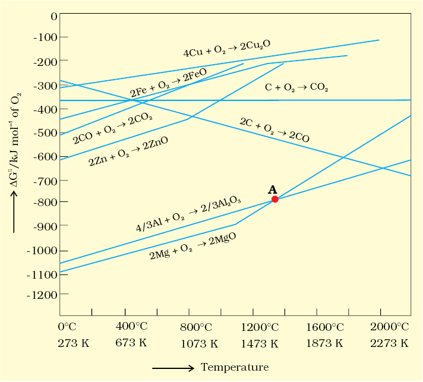
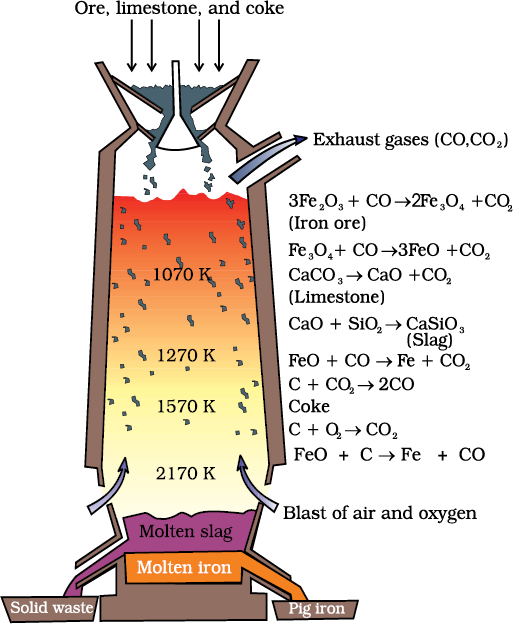
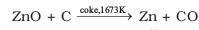

6.4 Thermodynamic Principles of metallurgy
Some basic concepts of thermodynamics help us in understanding the theory of metallurgical transformations. Gibbs energy is the most significant term here.The change in Gibbs energy, ∆G for any process at any specified temperature, is described by the equation:
∆G = ∆H – T∆S (6.14)
where, ∆H is the enthalpy change and ∆S is the entropy change for the process. For any reaction, this change could also be explained through the equation:
∆G = – RTlnK (6.15)
where, K is the equilibrium constant of the ‘reactant – product’ system at the temperature,T. A negative ∆G implies a +ve K in equation 6.15. And this can happen only when reaction proceeds towards products. From these facts we can make the following conclusions:
During metallurgy, ‘flux’ is added which combines with ‘gangue’ to form ‘slag’. Slag separates more easily from the ore than the gangue. This way, removal of gangue becomes easier.
1. When the value of ∆G is negative in equation 6.14, only then the reaction will proceed. If ∆S is positive, on increasing the temperature (T), the value of T∆S would increase (∆H < T∆S) and then ∆G will become –ve.
2. If reactants and products of two reactions are put together in a system and the net ∆G of the two possible reactions is –ve, the overall reaction will occur. So the process of interpretation involves coupling of the two reactions, getting the sum of their ∆G and looking for its magnitude and sign. Such coupling is easily understood through Gibbs energy (∆G) vs T plots for formation of the oxides (Fig. 6.4).
Ellingham Diagram
The graphical representation of Gibbs energy was first used by H.J.T.Ellingham This provides a sound basis for considering the choice of reducing agent in the reduction of oxides. This is known as Ellingham Diagram. Such diagrams help us in predicting the feasibility of thermal reduction of an ore. The criterion of feasibility is that at a given temperature, Gibbs energy of the reaction must be negative.
(a) Ellingham diagram normally consists of plots of ΔfG vs T for formation of oxides of elements i.e., for the reaction,
2xM(s) + O2(g) → 2MxO(s)
In this reaction, the gaseous amount (hence molecular randomness) is decreasing from left to right due to the consumption of gases leading to a –ve value of ΔS which changes the sign of the second term in equation (6.14). Subsequently ΔG shifts towards higher side despite rising T (normally, ΔG decreases i.e., goes to lower side with increasing temperature). The result is +ve slope in the curve for most of the reactions shown above for formation of MxO(s).
(b) Each plot is a straight line except when some change in phase (s → liq or liq→ g) takes place. The temperature at which such change occurs, is indicated by an increase in the slope on +ve side (e.g., in the Zn, ZnO plot, the melting is indicated by an abrupt change in the curve).
(c) There is a point in a curve below which ΔG is negative (So MxO is stable). Above this point, MxO will decompose on its own.
(d) In an Ellingham diagram, the plots of ΔG for oxidation (and therefore reduction of the corresponding species) of common metals and some reducing agents are given. The values of Δf G, etc.(for formation of oxides) at different temperatures are depicted which make the interpretation easy.
(e) Similar diagrams are also constructed for sulfides and halides and it becomes clear why reductions of MxS is difficult. There, the Δf G of MxS is not compensated.
Limitations of Ellingham Diagram
1. The graph simply indicates whether a reaction is possible or not i.e., the tendency of reduction with a reducing agent is indicated. This is so because it is based only on the thermodynamic concepts. It does not say about the kinetics of the reduction process (Cannot answer questions like how fast it could be ?).
2. The interpretation of ΔGV is based on K (ΔG = – RT lnK). Thus it is presumed that the reactants and products are in equilibrium:
MxO + Ared l xM + AOox
This is not always true because the reactant/product may be solid. [However it explains how the reactions are sluggish when every species is in solid state and smooth when the ore melts down.It is interestng to note here that ΔH (enthalpy change) and the ΔS (entropy change) values for any chemical reaction remain nearly constant even on varying temperature. So the only dominant variable in equation(6.14) becomes T. However, ΔS depends much on the physical state of the compound. Since entropy depends on disorder or randomness in the system, it will increase if a compound melts (s→ l ) or vapourises (l→ g) since molecular randomness increases on changing the phase from solid to liquid or from liquid to gas].
The reducing agent forms its oxide when the metal oxide is reduced. The role of reducing agent is to provide ΔG negative and large enough to make the sum of ΔGV of the two reactions (oxidation of the reducing agent and reduction of the metal oxide) negative.
As we know, during reduction, the oxide of a metal decomposes:
MxO(s) → xM (solid or liq) + 1/2 O2 (g) (6.16)
The reducing agent takes away the oxygen. Equation 6.16 can be visualised as reverse of the oxidation of the metal. And then, the Δf G value is written in the usual way:
xM(s or l) + 1/2 O2(g) → MxO(s) [ΔG (M,MxO)] (6.17)
If reduction is being carried out through equation 6.16, the oxidation of the reducing agent (e.g., C or CO) will be there:
C(s) + 1/2 O2(g) → CO(g) [ΔG(C, CO)] (6.18)
CO(g) + 1/2 O2(g) → CO2(g) [ΔG(CO, CO2)] (6.19)
If carbon is taken, there may also be complete oxidation of the element to CO2:
1/2 C(s) + 1/2 O2(g) → 1/2 CO2(g) [ 1/2 ΔG(C, CO2)] (6.20)
On subtracting equation 6.17 [it means adding its negative or the reverse form as in equation 6.16] from one of the three equations, we get:
MxO(s) + C(s) → xM(s or l) + CO(g) (6.21)
MxO(s) + CO(g) → xM(s or l) + CO2(g) (6.22)
MxO(s) + 1/2 C(s) → xM(s or l) + 1/ 2 CO2(g) (6.23)
These reactions describe the actual reduction of the metal oxide, MxO that we want to accomplish. The ΔrG values for these reactions in general, can be obtained by similar subtraction of the corresponding Δf G values.
As we have seen, heating (i.e., increasing T) favours a negative value of ΔrG. Therefore, the temperature is chosen such that the sum of ΔrG in the two combined redox process is negative. In ΔrG vs T plots, this is indicated by the point of intersection of the two curves (curve for MxO and that for the oxidation of the reducing substance). After that point, the ΔrG value becomes more negative for the combined process including the reduction of MxO. The difference in the two ΔrG
values after that point determines whether reductions of the oxide of the upper line is feasible by the element represented by the lower line. If the difference is large, the reduction is easier.
Example 6.1
Suggest a condition under which magnesium could reduce alumina.
Solution
The two equations are:
(a) 4/3 Al + O2 → 2/3 Al2O3 (b) 2Mg +O2 → 2MgO
At the point of intersection of the Al2O3 and MgO curves (marked "A" in diagram 6.4), the ΔG becomes ZERO for the reaction:
2/3 Al2 O3 +2Mg → 2MgO +4/3 Al
Below that point magnesium can reduce alumina.
Example 6.2
Although thermodynamically feasible, in practice, magnesium metal is not used for the reduction of alumina in the metallurgy of aluminium. Why ?
Solution
Temperatures below the point of intersection of Al2O3 and MgO curves, magnesium can reduce alumina. But the process will be uneconomical.
Example 6.3
Why is the reduction of a metal oxide easier if the metal formed is in liquid state at the temperature of reduction?
Solution
The entropy is higher if the metal is in liquid state than when it is in solid state. The value of entropy change (ΔS) of the reduction process is more on +ve side when the metal formed is in liquid state and the metal oxide being reduced is in solid state. Thus the value of ΔGbecomes more on negative side and the reduction becomes easier.
6.4.1 Applications
(a) Extraction of iron from its oxides
Oxide ores of iron, after concentration through calcination/roasting (to remove water, to decompose carbonates and to oxidise sulphides) are mixed with limestone and coke and fed into a Blast furnace from its top. Here, the oxide is reduced to the metal. Thermodynamics helps us to understand how coke reduces the oxide and why this furnace is chosen. One of the main reduction steps in this process is:
FeO(s) + C(s) → Fe(s/l) + CO (g) (6.24)
It can be seen as a couple of two simpler reactions. In one, the reduction of FeO is taking place and in the other, C is being oxidised to CO:
FeO(s) → Fe(s) + 1/2 O2(g) [ΔG(FeO, Fe)] (6.25)
C(s) + 1/2 O2 (g) → CO (g) [ΔG (C, CO)] (6.26)
When both the reactions take place to yield the equation (6.24), the net Gibbs energy change becomes:
ΔG (C, CO) + ΔG (FeO, Fe) = ΔrG (6.27)
Naturally, the resultant reaction will take place when the right hand side in equation 6.27 is negative. In ΔG vs T plot representing reaction 6.25, the plot goes upward and that representing the change C→ CO (C,CO) goes downward. At temperatures above 1073K (approx.), the C,CO line comes below the Fe,FeO line [ΔG (C, CO) < ΔG(Fe, FeO)]. So in this range, coke will be reducing the FeO and will itself be oxidised to CO. In a similar way the reduction of Fe3O4 and Fe2O3 at relatively lower temperatures by CO can be explained on the basis of lower lying points of intersection of their curves with the CO, CO2 curve in Fig. 6.4.

Fig. 6.4: Gibbs energy (ΔG) vs T plots (schematic) for formation of some oxides (Ellingham diagram)
In the Blast furnace, reduction of iron oxides takes place in different temperature ranges. Hot air is blown from the bottom of the furnace and coke is burnt to give temperature upto about 2200K in the lower portion itself. The burning of coke therefore supplies most of the heat required in the process. The CO and heat moves to upper part of the furnace. In upper part, the temperature is lower and the iron oxides (Fe2O3 and Fe3O4) coming from the top are reduced in steps to FeO.
Thus, the reduction reactions taking place in the lower temperature range and in the higher temperature range, depend on the points of corresponding intersections in the ΔrG vs T plots. These reactions can be summarised as follows:
At 500 – 800 K (lower temperature range in the blast furnace)–
3 Fe2O3 + CO → 2 Fe3O4 + CO2 (6.28)
Fe3O4 + 4 CO → 3Fe + 4 CO2 (6.29)
Fe2O3 + CO → 2FeO + CO2 (6.30)
At 900 – 1500 K (higher temperature range in the blast furnace):
C + CO2 → 2 CO (6.31)
FeO + CO → Fe + CO2 (6.32)

Fig. 6.5: Blast furnace
Limestone is also decomposed to CaO which removes silicate impurity of the ore as slag. The slag is in molten state and separates out from iron.
The iron obtained from Blast furnace contains about 4% carbon and many impurities in smaller amount (e.g., S, P, Si, Mn). This is known as pig iron and cast into variety of shapes. Cast iron is different from pig iron and is made by melting pig iron with scrap iron and coke using hot air blast. It has slightly lower carbon content (about 3%) and is extremely hard and brittle.
Further Reductions
Wrought iron or malleable iron is the purest form of commercial iron and is prepared from cast iron by oxidising impurities in a reverberatory furnace lined with haematite. This haematite oxidises carbon to carbon monoxide:
Fe2O3 + 3 C → 2 Fe + 3 CO (6.33)
Limestone is added as a flux and sulphur, silicon and phosphorus are oxidised and passed into the slag. The metal is removed and freed from the slag by passing through rollers.
(b) Extraction of copper from cuprous oxide [copper(I) oxide]
In the graph of ΔrG vs T for formation of oxides (Fig. 6.4), the Cu2O line is almost at the top. So it is quite easy to reduce oxide ores of copper directly to the metal by heating with coke (both the lines of C, CO and C, CO2 are at much lower positions in the graph particularly after 500 – 600K). However most of the ores are sulphide and some may also contain iron. The sulphide ores are roasted/smelted to give oxides:
2Cu2S + 3O2 → 2Cu2O + 2SO2 (6.34)
The oxide can then be easily reduced to metallic copper using coke:
Cu2O + C → 2 Cu + CO (6.35)
In actual process, the ore is heated in a reverberatory furnace after mixing with silica. In the furnace, iron oxide 'slags of' as iron silicate and copper is produced in the form of copper matte. This contains Cu2S and FeS.
FeO + SiO2 → FeSiO3 (6.36)
(Slag)
Copper matte is then charged into silica lined convertor. Some silica is also added and hot air blast is blown to convert the remaining FeS, FeO and Cu2S/Cu2O to the metallic copper. Following reactions take place:
2FeS + 3O2 → 2FeO + 2SO2 (6.37)
FeO + SiO2 → FeSiO3 (6.38)
2Cu2S + 3O2 → 2Cu2O + 2SO2 (6.39)
2Cu2O + Cu2S → 6Cu + SO2 (6.40)
The solidified copper obtained has blistered appearance due to the evolution of SO2 and so it is called blister copper.
(c) Extraction of zinc from zinc oxide
The reduction of zinc oxide is done using coke. The temperature in this case is higher than that in case of copper. For the purpose of heating, the oxide is made into brickettes with coke and clay.
 (6.41)
The metal is distilled off and collected by rapid chilling.